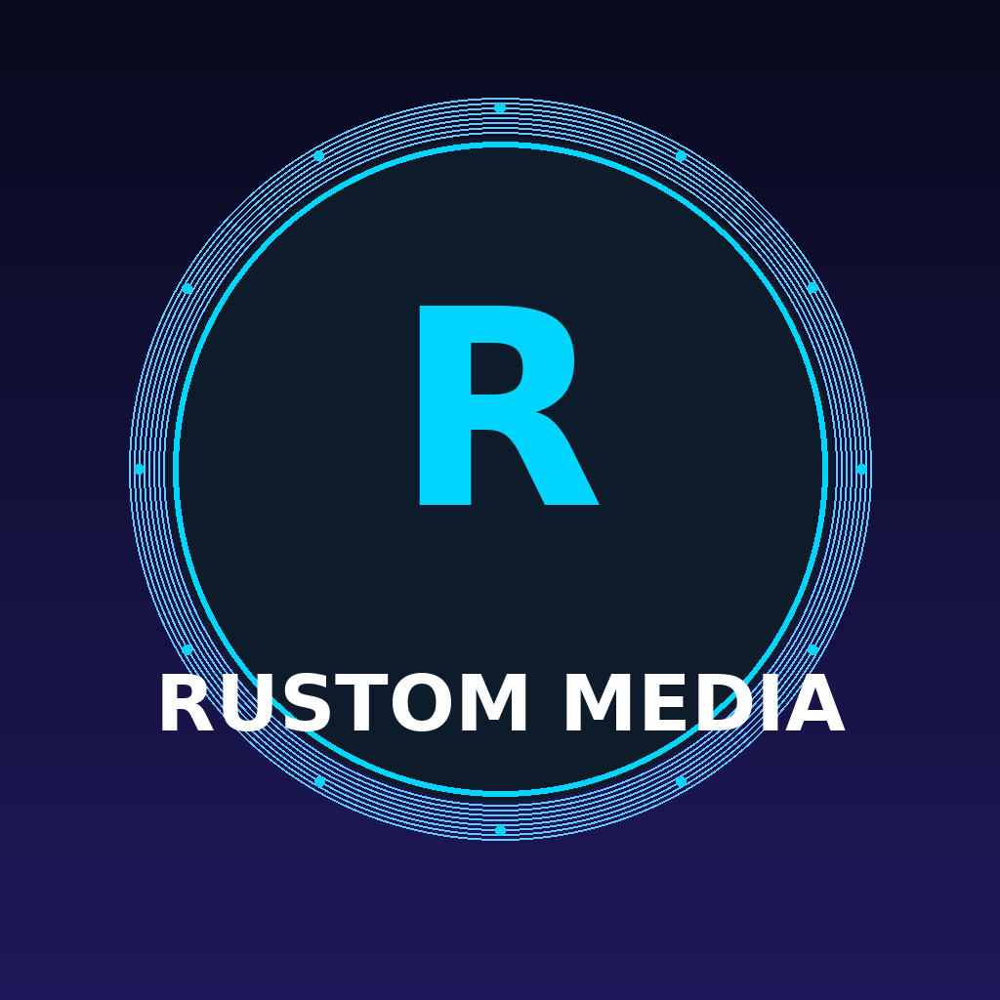

Privacy Policy
Effective Date: June 2, 2026
This Privacy Policy describes how Rustom Media collects, uses, and protects information in connection with our automated content publishing service.
We collect only the information necessary to operate the Service, including:
Collected information is used solely to:
We do not sell, trade, or share your personal information with third parties. OAuth tokens are stored securely and used only for publishing on your behalf.
All credentials and tokens are stored locally on secured servers. We do not store your social media passwords.
This Service interacts with TikTok, YouTube, and Instagram APIs. Your use is also subject to their respective privacy policies.
You may revoke access at any time by disconnecting the app from your social media account settings.
For privacy questions, contact us via GitHub.